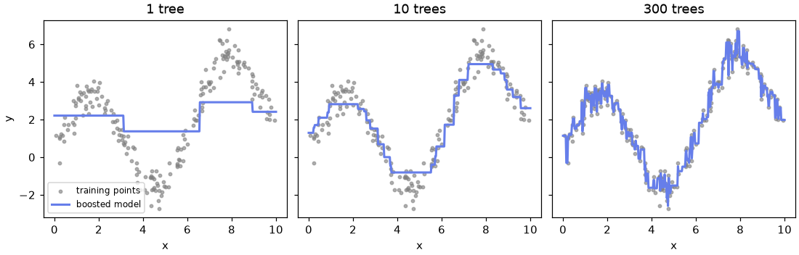
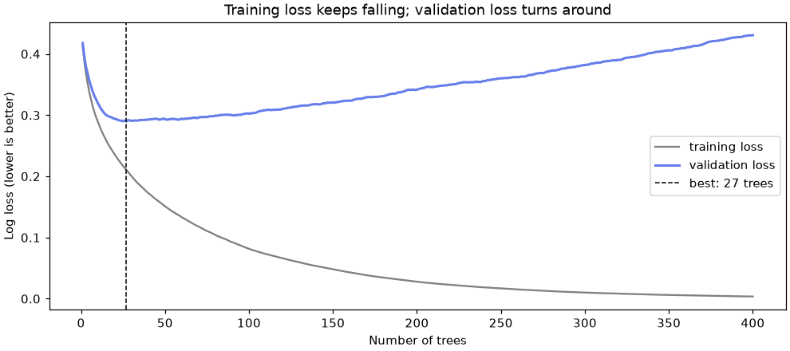
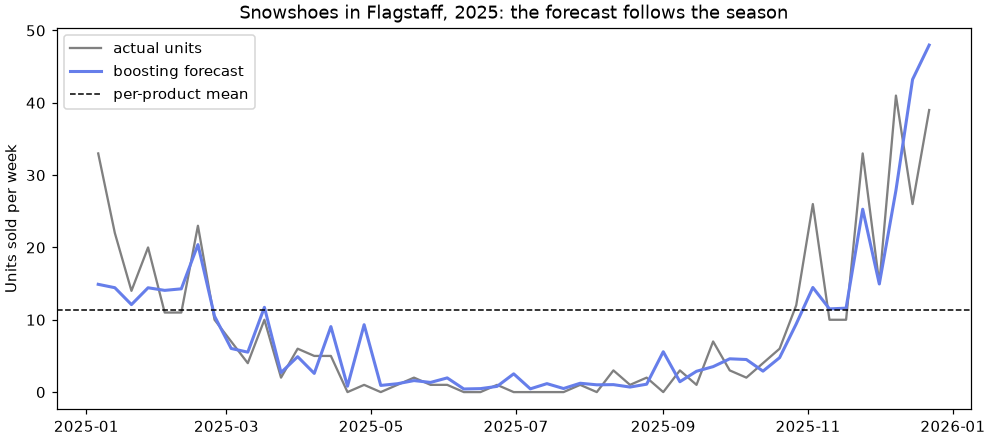

🚀 Lesson 5.3: Gradient Boosting
Build a strong model out of many weak ones, each fixing what the last ones got wrong, and learn to run the three boosting libraries that win most tabular-data problems.
🎯 Learning Objectives
By the end of this lesson, you will be able to:
- Explain how boosting adds small trees one after another, each fitted to the remaining errors, and how the learning rate controls the step size
- Train
HistGradientBoostingClassifierandHistGradientBoostingRegressoron data with missing values and native categorical columns - Use early stopping on a validation set to choose the number of trees without touching the test set
- Run the same model with
XGBClassifierandLGBMClassifier, including their categorical and early-stopping options - Choose between a random forest, scikit-learn's boosting and the external libraries for a given problem
In This Lesson
🧭 Many Small Corrections
In Lesson 5.2 you built a random forest: hundreds of deep trees, each trained on its own random sample of customers, and averaged at the end. The trees never talk to each other. Each one is a noisy expert, and averaging cancels much of the noise. That is why a forest mostly fixes variance, the jumpiness of a single deep tree.
Boosting works the other way round. It trains trees one after another. Each tree is small and weak on its own, and each one is trained on exactly what the trees before it still get wrong. Add enough of these small corrections and you get a model that can follow very detailed patterns. Boosting mostly fixes bias, the stubbornness of a model that is too simple.
💡 Mental Model: Putting on a Golf Green
A golfer rarely sinks a long putt in one stroke. The first putt gets the ball close; the second one corrects what is left; the third tidies up. Every stroke aims at the remaining distance, not at the original one.
Boosting is the same. The model starts with a crude guess (the average). Tree 1 aims at the gap between that guess and the truth. Tree 2 aims at what is still left after tree 1, and so on. The learning rate is how hard you hit each putt: a gentle tap (a small learning rate) needs more strokes but rarely overshoots the hole.
🤔 Why This Matters
Gradient-boosted trees are the default first choice for tabular data: rows of customers, transactions or products with a mix of numbers and categories. They handle nonlinear effects and interactions without feature engineering, they do not need scaled features, and the modern implementations handle missing values and categories directly. On the Pinecrest churn data you will see boosting beat logistic regression clearly, and in the project it cuts the demand forecast error by more than a third compared with a per-product average.
✋ Boosting by Hand
The idea is simple enough to code in a dozen lines, and doing it once by hand makes every hyperparameter in the libraries obvious. Make a wavy one-feature regression problem: 200 noisy training points, plus 1,000 fresh points from the same curve to play the role of new data.
import numpy as np
from sklearn.tree import DecisionTreeRegressor
rng = np.random.default_rng(42)
def make_wave(n):
x = rng.uniform(0, 10, n)
y = 3 * np.sin(x) + 0.3 * x + rng.normal(0, 0.5, n)
return x.reshape(-1, 1), y
X_toy, y_toy = make_wave(200)
X_new, y_new = make_wave(1000)
print(X_toy.shape, X_new.shape, f"noise variance {0.5 ** 2}")Output
(200, 1) (1000, 1) noise variance 0.25The noise has a variance of 0.25, so no model can get the mean squared error (MSE) on new data below about 0.25. Keep that floor in mind. Now boost: start from the mean, then repeatedly fit a depth-2 tree to the residuals (truth minus current prediction) and add a fraction of its output.
def boost(learning_rate, n_trees, report=()):
pred = np.full(len(y_toy), y_toy.mean()) # start: the average
pred_new = np.full(len(y_new), y_toy.mean())
for m in range(1, n_trees + 1):
residual = y_toy - pred # what is still wrong
tree = DecisionTreeRegressor(max_depth=2, random_state=42).fit(X_toy, residual)
pred += learning_rate * tree.predict(X_toy) # a small step towards the truth
pred_new += learning_rate * tree.predict(X_new)
if m in report:
print(f"{m:4d} trees train MSE {np.mean((y_toy - pred) ** 2):.3f}"
f" new-data MSE {np.mean((y_new - pred_new) ** 2):.3f}")
return pred_new
curve = boost(learning_rate=0.3, n_trees=300, report=(1, 3, 10, 30, 100, 300))Output
1 trees train MSE 3.055 new-data MSE 2.964
3 trees train MSE 1.364 new-data MSE 1.410
10 trees train MSE 0.353 new-data MSE 0.476
30 trees train MSE 0.156 new-data MSE 0.361
100 trees train MSE 0.075 new-data MSE 0.393
300 trees train MSE 0.010 new-data MSE 0.471Read the two columns separately. The training error falls forever: with 300 trees it is almost zero, far below the 0.25 noise floor, which means the model has started memorizing noise. The new-data error falls quickly, bottoms out around 30 trees, then creeps back up. That U-turn is overfitting, and it is why every boosting library offers early stopping: watch a validation set and stop adding trees when it stops improving.
import matplotlib.pyplot as plt
grid = np.linspace(0, 10, 400).reshape(-1, 1)
X_keep, y_keep = X_new, y_new
X_new, y_new = grid, 3 * np.sin(grid.ravel()) + 0.3 * grid.ravel() # draw the fits on a grid
fig, axes = plt.subplots(1, 3, figsize=(10, 3.2), layout="constrained", sharey=True)
for ax, n in zip(axes, [1, 10, 300]):
ax.scatter(X_toy, y_toy, s=8, color="gray", alpha=0.6, label="training points")
ax.plot(grid, boost(0.3, n), color="#667eea", linewidth=2, label="boosted model")
ax.set_title(f"{n} tree{'s' if n > 1 else ''}")
ax.set_xlabel("x")
axes[0].set_ylabel("y")
axes[0].legend(loc="lower left", fontsize=8)
plt.show()
X_new, y_new = X_keep, y_keep # restore the real new data
📐 The One Formula
After m trees the model is the starting guess plus a sum of shrunken trees:
Fm(x) = Fm-1(x) + ν · hm(x)
Here hm is the new tree and ν (nu) is the learning rate. The word gradient comes from what the tree is fitted to. For squared error, the residual y - F(x) is exactly the negative gradient of the loss, so "fit the residuals" and "take a gradient-descent step" are the same thing. For other losses the libraries fit the negative gradient of that loss instead. For churn, the classifier works on the log-odds scale and each tree is fitted to y - p, the gap between the 0/1 label and the current predicted probability. Same golf, different green.
The learning rate trades speed for quality. Run the same procedure with a full-strength step and with a gentle one:
for lr in [1.0, 0.05]:
print(f"learning rate {lr}")
boost(learning_rate=lr, n_trees=300, report=(10, 100, 300))Output
learning rate 1.0
10 trees train MSE 0.220 new-data MSE 0.449
100 trees train MSE 0.006 new-data MSE 0.508
300 trees train MSE 0.000 new-data MSE 0.520
learning rate 0.05
10 trees train MSE 2.454 new-data MSE 2.398
100 trees train MSE 0.210 new-data MSE 0.369
300 trees train MSE 0.124 new-data MSE 0.354With a step of 1.0 the model memorizes fast and its best new-data error is worse. With 0.05 it needs many more trees, but its error at 300 trees (0.354) beats the best that 0.3 ever reached. That is the general rule: a smaller learning rate with more trees usually generalizes a little better, at the cost of training time. You will pair a small learning rate with early stopping, which picks the number of trees for you.
📊 HistGradientBoosting on Churn
scikit-learn has two boosting families. GradientBoostingClassifier is the original, exact implementation: fine for a few thousand rows, slow beyond that. HistGradientBoostingClassifier (and ...Regressor) is the modern one, and the one to use. It is fast, handles missing values on its own, and understands categorical columns. Load the churn data with all 16 usable features (the leaky cancellation_reason stays out, as always).
import pandas as pd
from sklearn.model_selection import train_test_split
customers = pd.read_csv("data/customers_churn.csv")
numeric = ["tenure_months", "orders_12m", "spend_12m", "avg_order_value", "days_since_last_order",
"returns_12m", "return_rate", "support_tickets_12m", "discount_share", "app_user",
"email_opens_90d"]
categorical = ["home_store", "region", "age_group", "loyalty_tier", "preferred_category"]
X = customers[numeric + categorical].copy()
X[categorical] = X[categorical].astype("category")
y = customers["churned"]
X_train, X_test, y_train, y_test = train_test_split(
X, y, test_size=0.25, stratify=y, random_state=42
)
print(X_train.shape, X_test.shape)
print(X_train.dtypes.astype(str).value_counts())
print("missing in training:", X_train[["email_opens_90d", "age_group"]].isna().sum().to_dict())Output
(4500, 16) (1500, 16)
int64 6
float64 5
category 5
Name: count, dtype: int64
missing in training: {'email_opens_90d': 419, 'age_group': 359}The one preparation step is astype("category"). The text columns come in as pandas strings; the category dtype tells the booster "these are labels, not numbers". There is no imputer and no scaler: missing values stay as they are.
from sklearn.ensemble import HistGradientBoostingClassifier
from sklearn.metrics import roc_auc_score, average_precision_score
hgb = HistGradientBoostingClassifier(random_state=42)
hgb.fit(X_train, y_train)
p_hgb = hgb.predict_proba(X_test)[:, 1]
print(f"accuracy {hgb.score(X_test, y_test):.3f} ROC AUC {roc_auc_score(y_test, p_hgb):.3f}"
f" average precision {average_precision_score(y_test, p_hgb):.3f}")
print("trees built:", hgb.n_iter_)
print("treated as categorical:", list(X_train.columns[hgb.is_categorical_]))Output
accuracy 0.867 ROC AUC 0.862 average precision 0.609
trees built: 100
treated as categorical: ['home_store', 'region', 'age_group', 'loyalty_tier', 'preferred_category']The default categorical_features="from_dtype" picked up exactly the five category columns. Lesson 2.2's one-hot pipeline reached a test AUC of 0.863 with the same booster, so native categories give the same quality with less code. To judge 0.86, put it next to the baseline and the standard linear model from Modules 2 and 3, a logistic-regression pipeline that imputes, scales and one-hot encodes:
from sklearn.compose import make_column_transformer
from sklearn.dummy import DummyClassifier
from sklearn.impute import SimpleImputer
from sklearn.linear_model import LogisticRegression
from sklearn.pipeline import make_pipeline
from sklearn.preprocessing import OneHotEncoder, StandardScaler
linear_prep = make_column_transformer(
(make_pipeline(SimpleImputer(strategy="median"), StandardScaler()), numeric),
(make_pipeline(SimpleImputer(strategy="most_frequent"), OneHotEncoder(handle_unknown="ignore")), categorical),
)
logreg = make_pipeline(linear_prep, LogisticRegression(max_iter=1000))
for name, model in [("baseline", DummyClassifier(strategy="most_frequent")),
("logistic regression", logreg),
("hist gradient boosting", hgb)]:
model.fit(X_train, y_train)
p = model.predict_proba(X_test)[:, 1]
print(f"{name:24s} ROC AUC {roc_auc_score(y_test, p):.3f} AP {average_precision_score(y_test, p):.3f}")Output
baseline ROC AUC 0.500 AP 0.165
logistic regression ROC AUC 0.826 AP 0.493
hist gradient boosting ROC AUC 0.862 AP 0.609Boosting wins by about 0.035 AUC and 0.12 average precision with zero preprocessing. The reason is in the data: churn risk jumps once a customer has been quiet for about 150 days (a threshold, not a straight line), it is high for both very new and very old customers (a U-shape), and support tickets matter only for customers who do not use the app (an interaction). Trees capture all three on their own; a logistic regression would need hand-made features for each (Lesson 2.3 built them and reached a test AUC of 0.880).
🔑 Why "Hist"?
Before training, each numeric feature is cut into at most 255 bins (by quantiles), and the trees only consider split points between bins. Finding the best split then means scanning 255 bin totals instead of sorting thousands of values, which is why it is many times faster than GradientBoostingClassifier on large data and loses almost nothing in accuracy. Missing values get their own bin: at each split the tree learns whether "missing" should go left or right. Categories are split by grouping categories together, so preferred_category needs no one-hot encoding.
⏱️ Learning Rate, Trees and Early Stopping
A handful of hyperparameters do almost all the work:
| Parameter (HistGB name) | Default | What it controls |
|---|---|---|
learning_rate | 0.1 | Step size ν. Smaller is steadier but needs more trees. |
max_iter | 100 | Maximum number of trees (boosting rounds). |
max_leaf_nodes / max_depth | 31 / None | Size of each tree. Bigger trees model more interactions per step and overfit faster. |
min_samples_leaf | 20 | Smallest leaf. Larger values smooth the model, important when the positive class is rare. |
l2_regularization | 0 | Shrinks leaf values towards zero. |
early_stopping | "auto" | Hold out validation_fraction of the training rows and stop after n_iter_no_change rounds without improvement. "auto" switches it on only above 10,000 rows. |
That last row matters here: with 4,500 training rows, early stopping is off by default and the model simply builds 100 trees. Is 100 right? To find out without touching the test set, carve a validation set out of the training rows and track the loss after every tree. staged_predict_proba yields the predictions after 1, 2, 3, ... trees.
from sklearn.metrics import log_loss
X_fit, X_val, y_fit, y_val = train_test_split(
X_train, y_train, test_size=0.2, stratify=y_train, random_state=42
)
long_run = HistGradientBoostingClassifier(learning_rate=0.1, max_iter=400, early_stopping=False,
random_state=42).fit(X_fit, y_fit)
train_loss = [log_loss(y_fit, p) for p in long_run.staged_predict_proba(X_fit)]
val_loss = [log_loss(y_val, p) for p in long_run.staged_predict_proba(X_val)]
best = int(np.argmin(val_loss)) + 1
print(f"best number of trees on validation: {best} (val loss {min(val_loss):.4f})")
print(f"after 100 trees: val loss {val_loss[99]:.4f}; after 400: {val_loss[-1]:.4f}")
fig, ax = plt.subplots(figsize=(9, 4), layout="constrained")
ax.plot(range(1, 401), train_loss, color="gray", label="training loss")
ax.plot(range(1, 401), val_loss, color="#667eea", linewidth=2, label="validation loss")
ax.axvline(best, color="black", linestyle="--", linewidth=1, label=f"best: {best} trees")
ax.set_xlabel("Number of trees")
ax.set_ylabel("Log loss (lower is better)")
ax.set_title("Training loss keeps falling; validation loss turns around")
ax.legend()
plt.show()Output
best number of trees on validation: 27 (val loss 0.2901)
after 100 trees: val loss 0.3026; after 400: 0.4306
You do not have to do this by hand. Turn on the built-in early stopping and the model holds out its own validation set (here 20% of the training rows) and stops when the validation loss has not improved for 20 rounds. Try three learning rates with a generous max_iter:
for lr in [0.3, 0.1, 0.03]:
model = HistGradientBoostingClassifier(
learning_rate=lr, max_iter=2000, early_stopping=True, validation_fraction=0.2,
n_iter_no_change=20, random_state=42,
).fit(X_train, y_train)
auc = roc_auc_score(y_test, model.predict_proba(X_test)[:, 1])
print(f"learning_rate {lr:4} trees used {model.n_iter_:4d} test ROC AUC {auc:.3f}")Output
learning_rate 0.3 trees used 29 test ROC AUC 0.846
learning_rate 0.1 trees used 56 test ROC AUC 0.867
learning_rate 0.03 trees used 149 test ROC AUC 0.870The toy example's lesson holds on real data: the gentle 0.03 uses the most trees and gives the best model. Early stopping chose the number of trees from the training data alone; the test set was only used once per model, to report. Note that random_state now matters: it decides which training rows become the internal validation set.
✅ A Recipe That Works Most of the Time
Pick a small learning rate (0.05 or 0.03), set max_iter high (1,000 or more), turn on early stopping, and only then tune tree size (max_leaf_nodes, min_samples_leaf) and l2_regularization. Lesson 6.2 automates that search with cross-validation.
📦 XGBoost and LightGBM
XGBoost and LightGBM are standalone libraries that popularized fast histogram boosting; scikit-learn's HistGradientBoosting was modeled on LightGBM. Both ship scikit-learn wrappers, so the estimator API you know still applies: create, fit, predict_proba. Their names for the same ideas differ a little:
| Idea | HistGradientBoosting | XGBoost | LightGBM |
|---|---|---|---|
| Number of trees | max_iter | n_estimators | n_estimators |
| Tree size | max_leaf_nodes | max_depth (6) | num_leaves (31) |
| Smallest leaf | min_samples_leaf | min_child_weight | min_child_samples |
| Row / column sampling | max_features (columns) | subsample, colsample_bytree | subsample, colsample_bytree |
| Categories | category dtype | category dtype + enable_categorical=True | category dtype |
| Early stopping | early_stopping=True | early_stopping_rounds= in the constructor, eval_set= in fit | callbacks=[lgb.early_stopping(...)], eval_X= and eval_y= in fit |
The external libraries do not hold out a validation set for you: you pass one in (eval_set for XGBoost; eval_X and eval_y for LightGBM, whose older eval_set argument is deprecated). Use the X_val you carved out above, never the test set.
from xgboost import XGBClassifier
xgb_model = XGBClassifier(
n_estimators=2000, learning_rate=0.03, max_depth=4,
enable_categorical=True, eval_metric="logloss", early_stopping_rounds=50,
random_state=42, verbosity=0,
)
xgb_model.fit(X_fit, y_fit, eval_set=[(X_val, y_val)], verbose=False)
p_xgb = xgb_model.predict_proba(X_test)[:, 1]
print(f"XGBoost best iteration {xgb_model.best_iteration:4d} test ROC AUC {roc_auc_score(y_test, p_xgb):.3f}")Output (yours may vary slightly)
XGBoost best iteration 218 test ROC AUC 0.864import lightgbm as lgb
from lightgbm import LGBMClassifier
lgbm_model = LGBMClassifier(
n_estimators=2000, learning_rate=0.03, num_leaves=15,
random_state=42, verbose=-1,
)
lgbm_model.fit(X_fit, y_fit, eval_X=X_val, eval_y=y_val, eval_metric="binary_logloss",
callbacks=[lgb.early_stopping(50, verbose=False)])
p_lgbm = lgbm_model.predict_proba(X_test)[:, 1]
print(f"LightGBM best iteration {lgbm_model.best_iteration_:4d} test ROC AUC {roc_auc_score(y_test, p_lgbm):.3f}")Output (yours may vary slightly)
LightGBM best iteration 262 test ROC AUC 0.865Both land in the same place as scikit-learn's version. On a dataset of this size the three libraries are interchangeable in accuracy; how you set the learning rate and stop matters far more than which logo is on the package. The "may vary" label is honest: XGBoost and LightGBM use multithreaded floating-point sums, so another machine can print a different last digit, or stop one or two rounds earlier.
⚠️ Old Tutorials, Old Arguments
Much of the XGBoost code online passes early_stopping_rounds and eval_metric to fit(). Current XGBoost takes them in the constructor only and raises a TypeError otherwise (see Common Mistakes). Likewise, LightGBM's old early_stopping_rounds= fit argument is gone; use the lgb.early_stopping callback.
🧭 Which Booster, and When
| Situation | Good first choice | Why |
|---|---|---|
| Tabular data, any size, inside a scikit-learn workflow | HistGradientBoosting* | No extra dependency, native NaN and categories, works with pipelines, cross-validation and tuning tools |
| Millions of rows, GPU available, or a team already using it | XGBoost or LightGBM | Mature GPU and distributed training, many extra options (custom objectives, ranking, SHAP built in) |
| Many high-cardinality categories | LightGBM, or CatBoost | CatBoost (another library, not installed in this course) uses ordered target statistics for categories |
| Little time to tune, want a robust baseline | Random forest | Hard to get badly wrong; boosting usually wins once tuned |
| You must explain every coefficient to a regulator | Logistic regression | Simplicity is a feature; compare its score with boosting to know what you give up |
Two honest caveats. First, boosting has more knobs than a forest and overfits if you let it run unchecked; early stopping is not optional. Second, deep learning is not the default answer for tables like these: on tabular data, well-tuned gradient-boosted trees match or beat neural networks most of the time at a fraction of the effort. Module 10 uses neural networks where they shine: images and sequences.
⚠️ Importance Describes the Model, Not the Customer
XGBoost and LightGBM expose feature_importances_ (split counts or gain). Like the forest's impurity importance in Lesson 5.2, these numbers describe how this model used each column, and they favor features with many possible split points. They do not say that discounts cause churn. Module 7 shows permutation importance and SHAP, which are more trustworthy, but still describe the model.
⚠️ Common Mistakes
Boosting libraries are strict about data types and have changed their APIs over the years, so most errors you meet are about one of those two things. The last mistake raises no error at all.
1. Text Columns Without the category dtype
HistGradientBoostingClassifier().fit(customers[["tenure_months", "home_store"]], y)Error
ValueError: could not convert string to float: 'Bend'What it means: HistGradientBoosting treats a column as categorical only if its dtype is category (or if you list it in categorical_features). A plain text column is treated as a number, and "Bend" is not one. Fix: X[cols] = X[cols].astype("category") before splitting, as in this lesson.
2. Text Columns in XGBoost
XGBClassifier(verbosity=0).fit(customers[["tenure_months", "home_store"]], y)Error
ValueError: DataFrame.dtypes for data must be int, float, bool or category. When categorical type is supplied, the experimental DMatrix parameter`enable_categorical` must be set to `True`. Invalid columns:home_store: strWhat it means: the message is long but precise: XGBoost accepts numbers, booleans and the category dtype, and it names the offending column. LightGBM says the same thing in its own words (pandas dtypes must be int, float or bool). Fix: convert text columns to category and pass enable_categorical=True, or one-hot encode them in a pipeline.
3. Early-Stopping Arguments in fit()
XGBClassifier(n_estimators=500, enable_categorical=True, verbosity=0).fit(
X_fit, y_fit, eval_set=[(X_val, y_val)], early_stopping_rounds=50
)Error
TypeError: XGBClassifier.fit() got an unexpected keyword argument 'early_stopping_rounds'What it means: older XGBoost versions accepted early_stopping_rounds and eval_metric in fit, and countless tutorials still show it. Current versions only accept them as constructor settings. Fix: XGBClassifier(..., early_stopping_rounds=50, eval_metric="logloss"), then fit(X, y, eval_set=[(X_val, y_val)]).
4. Early Stopping on the Test Set
peeking = XGBClassifier(
n_estimators=2000, learning_rate=0.03, max_depth=4, enable_categorical=True,
eval_metric="auc", early_stopping_rounds=50, random_state=42, verbosity=0,
)
peeking.fit(X_train, y_train, eval_set=[(X_test, y_test)], verbose=False)
print(f"stopped at {peeking.best_iteration} trees, the best point ON THE TEST SET")
print(f"reported test ROC AUC {roc_auc_score(y_test, peeking.predict_proba(X_test)[:, 1]):.3f}")Output (no error, and that is the problem; yours may vary slightly)
stopped at 127 trees, the best point ON THE TEST SET
reported test ROC AUC 0.872What happened: the number of trees was chosen by watching the test set, so the test score is now partly a training score. It looks a little better than the honest models above, and you can no longer tell how much of that is real. With many tuning rounds the bias grows. Fix: early-stop on a validation set carved from the training rows (X_val), or use the built-in early_stopping=True of HistGradientBoosting; touch the test set once, at the end.
🛠️ Project: Weekly Demand Forecaster
Pinecrest's buyers order stock weeks ahead, so they need a forecast of units sold per product, store and week. You will train on 2024 and test on all of 2025, exactly as a forecast made at the start of 2025 would be judged. Pinecrest plans prices, promotions and holiday weeks in advance, so those columns are fair inputs; the weekly temperature is used as if a reliable seasonal forecast were available (an assumption to note in your summary). Work in a new notebook, lesson_5_3_project. Allow about 40 minutes.
🛠️ Step 1: Load and split by time (5 min)
Never split time-ordered data at random: the model would learn from weeks that come after the weeks it is tested on. Lesson 1.2 explains why; here the split is a single line.
import numpy as np
import pandas as pd
from sklearn.metrics import mean_absolute_error, r2_score
demand = pd.read_csv("data/weekly_demand.csv")
features = ["store", "product_id", "category", "week_of_year", "list_price",
"discount_pct", "price", "promo", "holiday_week", "avg_high_temp_f"]
cat_cols = ["store", "product_id", "category"]
X_d = demand[features].copy()
X_d[cat_cols] = X_d[cat_cols].astype("category")
is_train = demand["year"] == 2024
Xd_train, Xd_test = X_d[is_train], X_d[~is_train]
yd_train, yd_test = demand.loc[is_train, "units_sold"], demand.loc[~is_train, "units_sold"]
print(len(Xd_train), "training weeks x products x stores;", len(Xd_test), "test")
print(f"mean units per row: train {yd_train.mean():.1f}, test {yd_test.mean():.1f}")Output
5088 training weeks x products x stores; 4896 test
mean units per row: train 24.4, test 26.32025 sells a little more than 2024: Pinecrest is growing. A model trained on 2024 has never seen 2025's level, which is part of what makes forecasting hard.
🛠️ Step 2: Three baselines (8 min)
A forecast must beat the simple rules a buyer would use without any model: the overall average, each product's average, and "same week last year". The error measure is the mean absolute error (MAE) in units: on average, how many units off is the forecast?
results = {}
results["overall mean"] = mean_absolute_error(yd_test, np.full(len(yd_test), yd_train.mean()))
train_rows, test_rows = demand[is_train], demand[~is_train]
product_mean = train_rows.groupby("product_id")["units_sold"].mean()
results["per-product mean"] = mean_absolute_error(yd_test, test_rows["product_id"].map(product_mean))
keys = ["product_id", "store", "week_of_year"]
last_year = train_rows.groupby(keys)["units_sold"].mean()
same_week = last_year.reindex(pd.MultiIndex.from_frame(test_rows[keys])).to_numpy()
results["same week last year"] = mean_absolute_error(yd_test, same_week)
for name, mae in results.items():
print(f"{name:22s} MAE {mae:6.2f}")Output
overall mean MAE 17.13
per-product mean MAE 13.42
same week last year MAE 13.81Knowing the product is worth a lot (17.1 down to 13.4). "Same week last year" knows the season but copies last year's noise and promotions, so it does no better.
🛠️ Step 3: Gradient boosting with native categories (8 min)
from sklearn.ensemble import HistGradientBoostingRegressor
hgb_sq = HistGradientBoostingRegressor(random_state=42).fit(Xd_train, yd_train)
pred_sq = hgb_sq.predict(Xd_test)
results["boosting, squared error"] = mean_absolute_error(yd_test, pred_sq)
print(f"MAE {results['boosting, squared error']:.2f} R2 {r2_score(yd_test, pred_sq):.3f}")
print("negative forecasts:", (pred_sq < 0).sum())Output
MAE 8.16 R2 0.742
negative forecasts: 45A big step: the error drops from 13.4 to about 8.2 units. Trees win here because the season works differently per category (snowshoes peak in winter, tents in summer), an interaction that boosting finds by itself. Be fair to linear models, though: in Lesson 3.2 a Ridge regression with hand-built interaction features reached an MAE of 7.92 on this same split. Boosting gets to about the same place with no feature work at all, which is its real advantage. One flaw remains: some forecasts are below zero, which no buyer can order.
🛠️ Step 4: A loss made for counts (7 min)
Units sold are counts: never negative, and noisier when they are larger. loss="poisson" makes the model predict on a log scale, so every forecast is positive and effects become multiplicative ("a promotion adds 30%") instead of additive ("a promotion adds 5 units"), which suits both socks and tents.
hgb_pois = HistGradientBoostingRegressor(loss="poisson", random_state=42).fit(Xd_train, yd_train)
pred_pois = hgb_pois.predict(Xd_test)
results["boosting, Poisson loss"] = mean_absolute_error(yd_test, pred_pois)
print(f"MAE {results['boosting, Poisson loss']:.2f} R2 {r2_score(yd_test, pred_pois):.3f}")
print(f"smallest forecast {pred_pois.min():.3f}")Output
MAE 8.05 R2 0.744
smallest forecast 0.395Slightly better and, more importantly, always sensible. Choosing the loss to match the target is often worth more than tuning.
🛠️ Step 5: Where does the model win? (7 min)
An overall MAE hides a lot. Compare the per-product baseline with the Poisson model category by category, and draw one product's 2025 forecast.
import matplotlib.pyplot as plt
check = test_rows[["week_start", "store", "product_id", "category", "units_sold"]].copy()
check["baseline"] = check["product_id"].map(product_mean)
check["forecast"] = pred_pois
by_cat = check.groupby("category").apply(
lambda g: pd.Series({"baseline MAE": mean_absolute_error(g["units_sold"], g["baseline"]),
"boosting MAE": mean_absolute_error(g["units_sold"], g["forecast"])})
)
print(by_cat.round(2).sort_values("boosting MAE"))
one = check[(check["product_id"] == "SNW-2001") & (check["store"] == "Flagstaff")]
fig, ax = plt.subplots(figsize=(9, 4), layout="constrained")
ax.plot(pd.to_datetime(one["week_start"]), one["units_sold"], color="gray", label="actual units")
ax.plot(pd.to_datetime(one["week_start"]), one["forecast"], color="#667eea", linewidth=2, label="boosting forecast")
ax.axhline(product_mean["SNW-2001"], color="black", linestyle="--", linewidth=1, label="per-product mean")
ax.set_ylabel("Units sold per week")
ax.set_title("Snowshoes in Flagstaff, 2025: the forecast follows the season")
ax.legend()
plt.show()Output
baseline MAE boosting MAE
category
Snow 13.33 4.50
Packs 9.16 5.45
Climbing 9.11 5.54
Sleeping 10.69 6.41
Tents 11.27 6.68
Apparel 12.59 7.88
Accessories 13.07 8.88
Camp Kitchen 19.31 11.10
Footwear 18.72 12.60
🛠️ Step 6: Save the forecast and summarize (5 min)
check[["week_start", "store", "product_id", "forecast"]].round(1).to_csv("demand_forecast_2025.csv", index=False)
best = min(results, key=results.get)
gain = 1 - results[best] / results["per-product mean"]
print("Weekly demand forecaster (train 2024, test 2025)")
for name, mae in sorted(results.items(), key=lambda kv: kv[1]):
print(f" {name:24s} MAE {mae:6.2f}")
print(f"Best: {best}, {gain:.0%} lower error than the per-product mean")
print(f"Saved demand_forecast_2025.csv ({len(check):,} rows)")Output
Weekly demand forecaster (train 2024, test 2025)
boosting, Poisson loss MAE 8.05
boosting, squared error MAE 8.16
per-product mean MAE 13.42
same week last year MAE 13.81
overall mean MAE 17.13
Best: boosting, Poisson loss, 40% lower error than the per-product mean
Saved demand_forecast_2025.csv (4,896 rows)✅ Project Completion Checklist
- Training rows are all from 2024 and test rows all from 2025; nothing was shuffled across years
- You measured three baselines and know which one a model has to beat (per-product mean, about 13.4)
- The store, product and category columns are
categorydtype, with no one-hot encoding - You compared squared-error and Poisson loss and can explain why Poisson suits unit counts
- Your per-category table shows where boosting helps most, and your chart shows one product's season
demand_forecast_2025.csvholds one forecast per store, product and week
🏋️ Hands-on Exercises
Exercise 1 uses the toy wave from "Boosting by Hand"; exercises 2 and 3 use the churn variables from the lesson (X_train, X_test, y_train, y_test). Run them in the lesson notebook, or rerun its first churn blocks.
🏋️ Exercise 1: Stumps or Bushes?
Change the tree size in the boosting loop. Boost the toy wave with trees of max_depth 1 (a "stump", one question), 2 and 5, each with learning rate 0.1 and 200 trees, and print the new-data MSE at 50 and 200 trees. Which depth generalizes best, and why might the deepest trees do worst?
💡 Hint
Copy the loop from boost and make max_depth a parameter. Remember the noise floor of 0.25.
✅ Solution
for depth in [1, 2, 5]:
pred = np.full(len(y_toy), y_toy.mean())
pred_new = np.full(len(y_new), y_toy.mean())
for m in range(1, 201):
tree = DecisionTreeRegressor(max_depth=depth, random_state=42).fit(X_toy, y_toy - pred)
pred += 0.1 * tree.predict(X_toy)
pred_new += 0.1 * tree.predict(X_new)
if m in (50, 200):
print(f"depth {depth} {m:3d} trees new-data MSE {np.mean((y_new - pred_new) ** 2):.3f}")Output
depth 1 50 trees new-data MSE 1.391
depth 1 200 trees new-data MSE 0.463
depth 2 50 trees new-data MSE 0.368
depth 2 200 trees new-data MSE 0.367
depth 5 50 trees new-data MSE 0.392
depth 5 200 trees new-data MSE 0.471Small trees are enough when each tree only has to make a small correction. Depth-5 trees have 32 leaves for 200 points, so each one can chase a few noisy points, and 200 of them memorize the training set. In the libraries, tree size (max_depth, max_leaf_nodes, num_leaves) is the second knob to tune after the learning rate. Stumps can only model one feature at a time; with one feature here that costs nothing, but on churn they could not capture the app-user-by-tickets interaction.
🏋️ Exercise 2: Tune Tree Size with Early Stopping
On the churn data, train HistGradientBoostingClassifier(learning_rate=0.05, max_iter=2000, early_stopping=True, validation_fraction=0.2, n_iter_no_change=20, random_state=42) with max_leaf_nodes set to 4, 8, 16 and 31. For each, print the number of trees used and the best internal validation loss. Which would you choose, judging only by the validation loss? Then print the test ROC AUC of your choice.
💡 Hint
After fitting, model.validation_score_ holds one score per iteration. With the default scoring ("loss") it stores the negative log loss, so higher is better and the best loss is -model.validation_score_.max().
✅ Solution
fitted = {}
for leaves in [4, 8, 16, 31]:
model = HistGradientBoostingClassifier(
learning_rate=0.05, max_iter=2000, max_leaf_nodes=leaves, early_stopping=True,
validation_fraction=0.2, n_iter_no_change=20, random_state=42,
).fit(X_train, y_train)
fitted[leaves] = model
print(f"max_leaf_nodes {leaves:2d} trees {model.n_iter_:4d} best validation loss {-model.validation_score_.max():.4f}")
choice = min(fitted, key=lambda k: -fitted[k].validation_score_.max())
auc = roc_auc_score(y_test, fitted[choice].predict_proba(X_test)[:, 1])
print(f"chosen: {choice} leaves, test ROC AUC {auc:.3f}")Output
max_leaf_nodes 4 trees 321 best validation loss 0.2877
max_leaf_nodes 8 trees 221 best validation loss 0.2900
max_leaf_nodes 16 trees 157 best validation loss 0.2925
max_leaf_nodes 31 trees 93 best validation loss 0.3005
chosen: 4 leaves, test ROC AUC 0.874Smaller trees need more rounds; larger trees stop sooner. The choice is made on validation data only, and the test set is used once, for the chosen model. Lesson 6.2 does this search properly, with cross-validation instead of a single validation split.
🏋️ Exercise 3: Teach the Model a Rule It Must Obey
Pinecrest's analysts insist that, other things equal, a longer gap since the last order should never lower predicted churn. HistGradientBoosting can enforce that with monotonic_cst={"days_since_last_order": 1} (1 = increasing, -1 = decreasing). Train a constrained model, print its test ROC AUC next to the unconstrained hgb, then take the first test customer, vary days_since_last_order over 0, 60, 120, 180, 240, 300, 360 and print both models' predicted probabilities.
💡 Hint
Build the "what if" rows with pd.concat([X_test.iloc[[0]]] * 7), then overwrite the column with the seven values. Keep the categorical dtypes intact.
✅ Solution
mono = HistGradientBoostingClassifier(monotonic_cst={"days_since_last_order": 1},
random_state=42).fit(X_train, y_train)
print(f"unconstrained AUC {roc_auc_score(y_test, hgb.predict_proba(X_test)[:, 1]):.3f} "
f"monotonic AUC {roc_auc_score(y_test, mono.predict_proba(X_test)[:, 1]):.3f}")
what_if = pd.concat([X_test.iloc[[0]]] * 7, ignore_index=True)
what_if["days_since_last_order"] = [0, 60, 120, 180, 240, 300, 360]
print(pd.DataFrame({
"days": what_if["days_since_last_order"],
"unconstrained": hgb.predict_proba(what_if)[:, 1].round(3),
"monotonic": mono.predict_proba(what_if)[:, 1].round(3),
}).to_string(index=False))Output
unconstrained AUC 0.862 monotonic AUC 0.860
days unconstrained monotonic
0 0.039 0.025
60 0.018 0.028
120 0.030 0.049
180 0.442 0.381
240 0.673 0.616
300 0.689 0.616
360 0.755 0.702The constrained model never goes down as the gap grows, and it costs little or nothing in AUC. Constraints like this make a model easier to defend in front of a business team, and they protect against odd wiggles where the training data is thin. They are a modeling choice, not a discovery: you are telling the model what you believe.
🏋️ Exercise 4: Boosting on Rare Fraud (Stretch)
Load data/transactions.csv (0.9% fraud). Use the nine numeric columns plus category (as category dtype), and a stratified 70/30 split with random_state=42. Compare a default HistGradientBoostingClassifier with a regularized one: learning_rate=0.05, max_iter=300, max_leaf_nodes=15, min_samples_leaf=40, l2_regularization=1.0, early_stopping=True, random_state=42. Report ROC AUC and average precision for both. Why would gentler, smaller trees help when there are only about 300 frauds to learn from?
💡 Hint
With 35,000 training rows, early_stopping="auto" is already on for both models. Average precision is the better yardstick when positives are this rare (Lesson 1.4).
✅ Solution
tx = pd.read_csv("data/transactions.csv")
tx_num = ["account_age_days", "amount", "hour", "items", "device_new", "billing_shipping_mismatch",
"country_mismatch", "card_attempts", "velocity_24h"]
X_tx = tx[tx_num + ["category"]].copy()
X_tx["category"] = X_tx["category"].astype("category")
Xt_train, Xt_test, yt_train, yt_test = train_test_split(
X_tx, tx["is_fraud"], test_size=0.3, stratify=tx["is_fraud"], random_state=42
)
print("frauds in training:", yt_train.sum())
for name, model in [
("default", HistGradientBoostingClassifier(random_state=42)),
("regularized", HistGradientBoostingClassifier(
learning_rate=0.05, max_iter=300, max_leaf_nodes=15, min_samples_leaf=40,
l2_regularization=1.0, early_stopping=True, random_state=42)),
]:
model.fit(Xt_train, yt_train)
p = model.predict_proba(Xt_test)[:, 1]
print(f"{name:12s} trees {model.n_iter_:3d} ROC AUC {roc_auc_score(yt_test, p):.3f}"
f" average precision {average_precision_score(yt_test, p):.3f}")Output
frauds in training: 307
default trees 46 ROC AUC 0.841 average precision 0.415
regularized trees 127 ROC AUC 0.864 average precision 0.506With only about 300 positive examples, a default model can build leaves around a handful of frauds and learn their quirks. Larger min_samples_leaf, fewer leaves, L2 shrinkage and a smaller step all force each tree to describe broader patterns. On rare-event problems the regularized booster is usually the better starting point.
🎯 Quick Quiz
🎯 Check Your Understanding
Question 1: In gradient boosting, what is each new tree trained to predict?
Question 2: The current model predicts 10 for two rows whose true values are 14 and 6. A new tree fits the residuals perfectly, and the learning rate is 0.5. What does this print?
quiz_pred = np.array([10.0, 10.0])
quiz_y = np.array([14.0, 6.0])
quiz_tree_output = quiz_y - quiz_pred
print(quiz_pred + 0.5 * quiz_tree_output)Question 3: With early stopping switched on, you lower learning_rate from 0.1 to 0.01. What should you expect?
Question 4: You early-stop an XGBClassifier. Which data should go into eval_set?
Question 5: Which statement about HistGradientBoostingClassifier is true?
❓ Common Questions at This Stage
Is boosting always better than a random forest?
No, but it usually wins once tuned, especially on larger tables. On the churn data the default forest and default boosting are close; boosting pulls ahead with a smaller learning rate and early stopping. A forest is the safer choice when you have no time to tune, because extra trees never make it overfit. Always compare both on the same cross-validation folds (Lesson 6.1).
What happened to GradientBoostingClassifier and AdaBoost?
Both still exist in scikit-learn. GradientBoostingClassifier is the exact, non-binned version: fine for small data and for teaching, but slow on large tables and without native missing-value or category support. AdaBoostClassifier is the historical ancestor of boosting: instead of fitting residuals, it re-weights the rows that earlier trees misclassified. It still works, but histogram gradient boosting has replaced both in practice.
Do I need to scale or one-hot encode for boosting?
Scaling: never, for any tree model. Encoding: not for HistGradientBoosting, XGBoost or LightGBM when the column has the category dtype. One-hot encoding still works and is sometimes better for categories with very few rows per level; with hundreds of levels, native handling or target encoding (Lesson 2.1) is usually better.
Early stopping stopped after very few trees. Is that a bug?
Usually it means the learning rate is high, the trees are large, or the validation set is small and noisy. Lower the learning rate, raise n_iter_no_change (or early_stopping_rounds) to 30 to 50 so one noisy round does not end training, and check that the validation set has enough positive cases.
Why do XGBoost and LightGBM give slightly different numbers on my computer?
They add up floating-point numbers in parallel, and the order of those additions depends on the number of threads and the processor. Tiny differences can change a split, which can change the stopping round. Differences in the third decimal of AUC are normal; differences in the first decimal mean your data or settings differ.
🌟 Going Further: Bonus Challenge
A buyer does not want the average week; they want enough stock not to run out. Train HistGradientBoostingRegressor(loss="quantile", quantile=0.9, random_state=42) on the demand data and check what share of 2025 rows sell at or below its forecast. It should be close to 90%. How many extra units per row does this "safety stock" forecast carry compared with the Poisson forecast? Which product categories carry the most?
📓 Learning Journal
Take five minutes to write in your learning journal (the journal.md file you started in Lesson 0.1, or a paper notebook). Jot down:
- Key concepts you learned today
- Techniques that clicked (and the ones that have not, yet)
- Questions or confusion to come back to
- Ideas to try on your own
- Progress and feelings: how did this lesson go for you?
✍️ This lesson's prompt: Explain the difference between a random forest and gradient boosting to a Pinecrest store manager in three sentences, without the words "variance" or "gradient". Then write down the two numbers from today that would convince that manager the forecaster is worth using, and one assumption in the project that they should challenge.
📝 Lesson Summary
🎓 Key Takeaways
- Boosting adds small trees one at a time, each fitted to what the current model still gets wrong: Fm = Fm-1 + ν · hm
- Training error falls forever; validation error turns around. Early stopping on a validation set picks the number of trees
- A smaller learning rate with more trees usually generalizes a little better; tune tree size and regularization after that
HistGradientBoosting*bins features, handles NaN natively and splitscategorycolumns without one-hot encoding- XGBoost and LightGBM follow the same estimator API; early stopping needs an explicit
eval_set(never the test set) and current argument names - Pick the loss that fits the target: Poisson for counts like units sold, quantile for "enough stock" forecasts
- On tabular data, tuned boosted trees are the usual benchmark to beat, deep learning included
🏆 What You've Accomplished
- You wrote gradient boosting from scratch and watched it overfit
- You beat logistic regression on churn with zero preprocessing
- You early-stopped three different libraries the right way
- You built a demand forecaster that cuts the per-product baseline's error by about 40%
🔭 Looking Ahead
In Lesson 5.4: Voting and Stacking you will combine different kinds of models, a logistic regression, a forest and a booster, into one. You will see when a team of models beats its best member, why the team must disagree to help, and how stacking learns whom to trust without leaking the answers.
📋 Before the Next Lesson
- Keep your project notebook: the per-category table is a good template for reporting any regression model.
- Rerun the churn early-stopping block with
random_state=7. How much do the number of trees and the test AUC move? That wobble is why Lesson 6.1 compares models with cross-validation. - Predict, without running it: will averaging the probabilities of a logistic regression and the boosted model beat the boosted model alone? Write down your guess; Lesson 5.4 answers it.
🌱 Encouragement for the Journey
You now know the algorithm behind a large share of the machine learning running in real businesses, and you know it from the inside: a loop of small corrections that you wrote yourself. The many knobs can feel like a lot at first. They are not a wall of magic numbers; they are the putting stroke, the size of each correction and when to stop, and you have already seen what each one does.